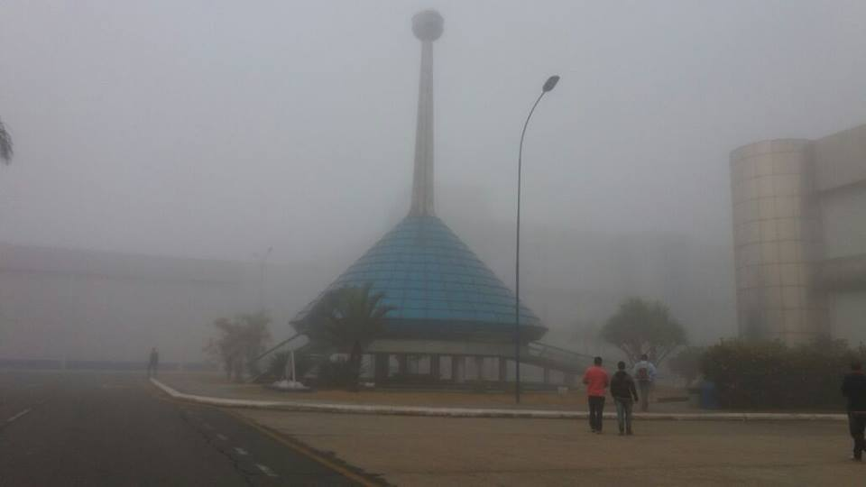
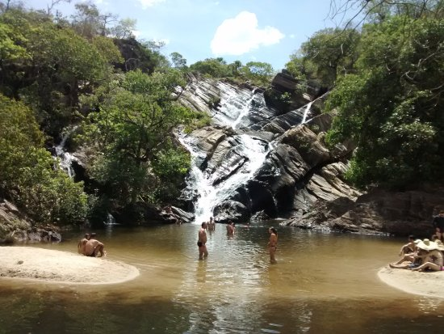
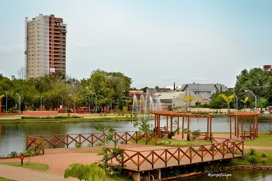

O clima em Anápolis, Goiás, é caracterizado por ser tropical com estação seca, apresentando temperaturas amenas devido à altitude da cidade. O período mais frio geralmente ocorre entre maio e setembro, com mínimas que podem chegar abaixo de 15°C, especialmente em junho e julho. A cidade também pode apresentar dias com temperaturas máximas em torno de 27°C, mas raramente abaixo de 24°C ou acima de 30°C
Veja o clima de Anápolis agora clincando aqui

A Cachoeira do Lázaro é uma das mais conhecidas da região e não é por acaso. Com cerca de 20 metros de altura, suas águas despencam em um cenário de tirar o fôlego. O local é ideal para um banho refrescante e para os apaixonados por fotografia, visto que a vegetação ao redor proporciona um toque especial ao visual. É possível acessar a cachoeira por trilhas que oferecem um passeio agradável e seguro.
Veja mais imagens da Cachoeira do Lazaro aqui

O Parque Ambiental Ipiranga está localizado no bairro Jundiaí em Anápolis, Goiás e foi inaugurado em 2010. Trechos do parque foram assentados sobre uma antiga floricultura municipal onde se preservou a cobertura vegetal antes existente, com árvores nativas e cinquentenárias.
Veja a localização do Parque Ambiental Ipiranga clincando aqui